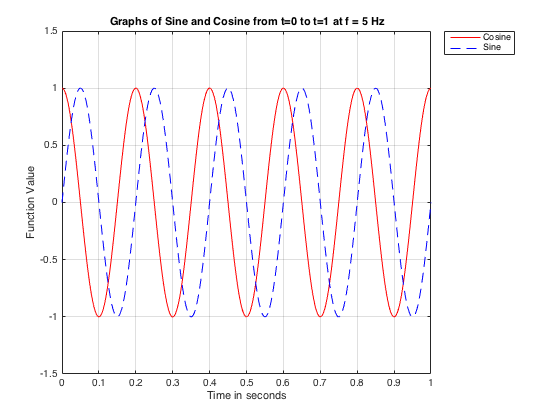

Contents
Homework #2
Simon Roy
clc
Problem #1
A
This problem asks us to create a variable called time using the clock function, and answer a couple of questions.
First I will set a variable called time equal to the function clock
time = clock % % Then I use the *size* function to get the dimensions of the array % dimensions = size(time) % % The command window and workspace show that _time_ is a *1x6* *row vector* with *double % precision floating point* numbers, arranged from left to right as a % constant (1e+03) multiplied by [year,month,day,hour,minute,second] % This information is pulled from the computer's operating system at the % time the code is executed. %
time =
1.0e+03 *
2.0160 0.0090 0.0070 0 0.0210 0.0145
dimensions =
1 6
B
This part asks for a variable called yearString that is only the year using datestr.
yearString = datestr(now,'yyyy') % % This saves the current year to the workspace, as a string variable named % yearString %
yearString = 2016
C
Part C asks us to save the variables we created in a .mat file
saveFile = 'datearrayandyearstring.mat'; save(saveFile, 'time','yearString') % % This set of commands saves the two variables to the indicated file. The % file gets saved in the current folder and in the workspace. % % To test the functionality, I will now clear the two variables from the % workspace, and reload them from the .mat file % clear time clear yearString load('datearrayandyearstring') % % We can see the two variables loaded into the workspace. *Note:* The time % variable now contains the current time when the file was reloaded into % the workspace, making this a very useful function to apply a timestamp to % various steps in a project. %
Problem #2
In this problem we will practice graphing sine and cosine functions.
A
Create a vector called tArray using linspace
tMin = 0; tMax = 1; tArray = linspace(tMin,tMax,1001); % % This creates a time array with 1001 elements, which gives 1000 intervals. % *Each interval is 0.001 seconds sampleInterval = (1-0)/1000
sampleInterval = 1.0000e-03
B
Make a variable for frequency f, set equal to 5 Hertz
f = 5
f =
5
C
We convert f to angular frequency by multiplying by 2*pi This will be angular frequency w
w = 2*f*pi()
w = 31.4159
D
Now I will save values for the cosine and sine functions, with frequency f, from 0 to 1 seconds. Each value will be stored as an array with 1001 elements to be matched with the tArray for plotting
cosineValues = cos(w*tArray); sineValues = sin(w*tArray);
E
Now I have the values to plot the functions. Note that f has units of inverse seconds, tArray has units of seconds, so the argument of the functions are unitless, as expected.
These commands make a nice labeled plot of the two functions on the specified interval
plot(tArray,cosineValues,'r-',tArray,sineValues,'b--') xlabel('Time in seconds') ylabel('Function Value') title('Graphs of Sine and Cosine from t=0 to t=1 at f = 5 Hz') % % The hold command will ensure that our next changes will be added to the % current plot % hold on
F
Next we will add a legend, These commands will turn on the legend, label the lines, and place the legend outside the figure in the upper right corner
legend toggle legend('Cosine','Sine','Location','NorthEastOutside')
G
This command will set the x axis to go from 0 to 1, while the y axis will go from -1.5 to 1.5. This will make the plot easier to see
axis([tMin,tMax,-1.5,1.5])
H
Now I'll turn on the grid using grid
grid on
 I
This plot is the required plot. The cosine function starts at a value of 1 for t=0 and reaches that value exactly 5 times in one second, which is what we expect for 5 Hz. The sine function is increasing from 0 at t=0, and comes to this place in the cycle exactly 5 times in the one second interval. The two curves are identical, aside from a pi/2 phase shift.
J
The amplitude of the wave(s) is 1
K
I could change the amplitude to anything I want by multiplying either function by the desired amplitude. For some constant A, the form would be A*cosine(w*t), where A is the desired amplitude
hold off
Problem #3
In this problem we will model the growth of a rabbit population.
A
First we'll set the initial number of rabbits, initialRabbits to two, and the time step dt equal to 1
initialRabbits = 2;
dt = 1;
%
B
Create a variable for maximum number of gestation periods cycles, and a growth rate variable b between 0 and 1
cycles = 10;
b = 0.9;
%
C
Now we need a while loop to run through the gestation cycles. I'll set rNow to the initial number of rabbits. I will also make a variable called cycleNumber set equal to 0. Then inside the loop I will add rNow and cycleNumber to appropriate empty arrays. Then I'll add the growth rate b multiplied by the time step dt multiplied by rNow to the old value of rNow and call it rNew. Then set rNow equal to rNew and cycleNumber equal to cycleNumber + 1. The loop will populate the empty arrays with values for the number of rabbits and the number of the gestation cycle for each iteration in theloop.
rNow = initialRabbits; cycleNumber = 0; rabbitCountArray = []; cycleNumberArray = []; while cycleNumber <= cycles; cycleNumberArray = [cycleNumberArray,cycleNumber]; rabbitCountArray = [rabbitCountArray,rNow]; rNew = rNow + b*rNow*dt; cycleNumber = cycleNumber + 1; rNow = rNew; end cycleNumberArray rabbitCountArray %
cycleNumberArray =
0 1 2 3 4 5 6 7 8 9 10
rabbitCountArray =
1.0e+03 *
Columns 1 through 7
0.0020 0.0038 0.0072 0.0137 0.0261 0.0495 0.0941
Columns 8 through 11
0.1788 0.3397 0.6454 1.2262
D
Now that we have the data points, it's time to make a plot. I will use subplot to plot the population, as well as the base ten log of the rabbit population. Also, I will turn on the grid, label the axes, and give each subplot a title.
subplot(1,2,1), plot(cycleNumberArray,rabbitCountArray) xlabel('Gestation Cycles') ylabel('Approximate Number of Rabbits') grid on % Right hand side title('Rabbit Population with b = 0.9' ) subplot(1,2,2), plot(cycleNumberArray,log10(rabbitCountArray)) xlabel('Gestation Cycles') ylabel('log10(Number of Rabbits)') grid on title('Log(base 10) of Rabbit Population (b = 0.9)')
E
For this step I varied the growth rate. I did not include all the plots here, but I varied the growth rate b between 0.1 and 0.9. A sample of the plots is below:
For small growth rates like 0.1, the population doesn't climb very quickly, but the graph of the log is still a straight line, indicating exponential growth. As the rate increases, the population increases very quickly, with the curve of the exponential becoming more pronounced, and the straight line on the log graph having a steeper slope. Here are a few samples: (To create these I ran my script several times with the savefig command, and then used openfig below to add each one to this document.)
openfig('growth0_1fig') openfig('growth0_3fig') openfig('growth0_5fig') openfig('growth0_7fig') openfig('growth0_9fig')
ans =
Figure (1) with properties:
Number: 1
Name: ''
Color: [0.9400 0.9400 0.9400]
Position: [360 271 560 420]
Units: 'pixels'
Use GET to show all properties
ans =
Figure (2) with properties:
Number: 2
Name: ''
Color: [0.9400 0.9400 0.9400]
Position: [360 271 560 420]
Units: 'pixels'
Use GET to show all properties
ans =
Figure (3) with properties:
Number: 3
Name: ''
Color: [0.9400 0.9400 0.9400]
Position: [31 271 560 420]
Units: 'pixels'
Use GET to show all properties
ans =
Figure (4) with properties:
Number: 4
Name: ''
Color: [0.9400 0.9400 0.9400]
Position: [93 271 560 420]
Units: 'pixels'
Use GET to show all properties
ans =
Figure (5) with properties:
Number: 5
Name: ''
Color: [0.9400 0.9400 0.9400]
Position: [93 271 560 420]
Units: 'pixels'
Use GET to show all properties
F
The gestation period for rabbits is around 28-31 days, according to reference.com (https://www.reference.com/pets-animals/gestation-period-rabbit-e07e56ef01f52d9c) Several other sources give similar average gestation periods. If we say that it's approximately one month, and there are 12 months in a calander year, we can say there are approximately 12 gestation periods in a year. Plugging in 12 for cycles and 1 for b, we get a plot that looks like this: Total rabbit population after 12 gestation periods: 8192
openfig('growth1cycle12fig')
ans =
Figure (6) with properties:
Number: 6
Name: ''
Color: [0.9400 0.9400 0.9400]
Position: [93 271 560 420]
Units: 'pixels'
Use GET to show all properties